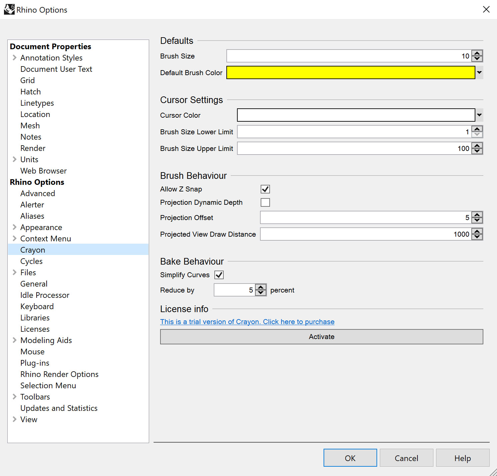

Options
Crayon options can be found in Rhino options.

Defaults
| Option |
Brush Size
|
The default brush size.
|
Default Brush Colour
|
The colour of the brush when starting Rhino. |
Cursor Settings
| Option |
Cursor Colour
|
Sets the colour of the brush cursor.
|
Brush Size Lower Limit
|
The smallest brush size allowable. |
Brush Size Upper Limit
|
The largest brush size allowable. |
Brush Behaviour
| Option |
Allow Z Snap
|
When shift is held down and the brush is in snap mode, enables or disables snapping in the Z direction.
|
Projection Dynamic Depth
|
If enabled the stroke will be draw starting from the current point beneath the cursor. |
Projection Offset
|
If draw on surface is enabled, the stroke will be offset towards the view by this amount. |
Projected View Draw Distance
|
If draw on view is enabled, the distance the strokes will be drawn away from the camera. |
Bake Behaviour
| Option |
Simplify curves
|
If enabled the amnount of control points on the baked curve will be reduced by the specified percentage.
|
Reduce by x percent
|
The percentage to reduce curve control points by. |
License Info
If Crayon is not activated, clicking activate will ask for a serial key. Otherwise the user's license information will be displayed here.